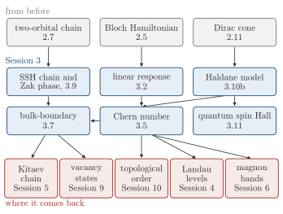

In this session we ask what happens when we open a gap in a Dirac cone. From before we need three things. The first is the Bloch Hamiltonian of Section 2.5, since every invariant of this session is built from its eigenvectors. The second is the Dirac cone of the honeycomb lattice of Section 2.11, one of the three types of dispersion of Section 2.10, which ARPES measures directly in graphene, as we saw in Section 2.12. The third is the two-orbital chain of (2.13), which becomes the SSH chain here.
A gap turns the Dirac metal into an insulator, but this insulator is not always an ordinary one. Depending on how the gap opens, the bulk can have a hidden integer, which is called a topological invariant. This integer does not appear in the bulk spectrum, but it forces conducting states at the edge, and no local disorder can remove them. First, we build linear response theory and use it for the Hall conductivity. Then we see that the Hall conductivity is an integer, the Chern number, and that a change of this integer at an interface forces a gapless state, which is the bulk-boundary correspondence. We use the quantum Hall state as the simplest example and the SSH chain as the one-dimensional one. At the end, in Section 3.10, we come back to the honeycomb lattice and see a Chern insulator appear without any magnetic field. In Section 3.11 we take two copies of it and build the quantum spin Hall insulator.

- In Session 4 the Chern number is applied to the Landau levels, which are flat bands with \(C=1\), in Section 4.4, and the Haldane model is connected to the quantum Hall state in Section 4.19.
- In Session 5 the SSH chain gives the Kitaev chain of Section 5.16, and in Section 5.14 a chiral p-wave superconductor has a Chern number.
- In Section 6.16 the Chern number of magnon bands gives chiral magnon edge modes.
- In Section 9.3 linear response is derived again in detail, and in Section 9.8 a vacancy probes the topology of the Haldane model and of a chiral p-wave superconductor.
- In Section 10.6 the Chern number and the Zak phase are the examples of phases that no local order parameter can separate.